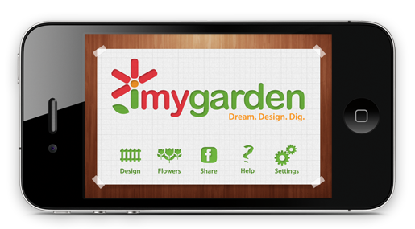

 Scroll over each step
Dream. Design. Big.
The iMyGarden app lets you see the finished results of your garden design before you have even touched the soil in your garden. Simple and fun, don't plan your next garden without this tool, it will be as important as your trowel and gloves!
Features
View flowers that bloom each season in your area.
Take photos of your existing yard or use one of our templates
100s of flowers to choose from
1000s of ways to design your garden
Share your design via facebook and view others for inspiration
Turn your e-garden into your real garden, order your selections and have them delivered to your front door
"An easy way to layout AND purchase the plants for my garden right from my iPhone?
I think I've died and gone to heaven!"
Bridget, BulbBlog.com
"Imygarden is a valuable tool. When planning a customer's garden I can envision it in my head and then see it grow right in front of me."
Jennifer San Filippo, Horticulturist
"Of course I'm crazy about flowers! This app is such a great visual tool that will help others plan to add more flowers to their gardens!"
Gabrielle, FlowerBulbCrazy.com